新人 AI 工作 SOP
网站部署上线
面向使用 AI 但不懂代码的新手。你负责点击操作，AI 负责技术判断。遇到任何困难，把信息发给 AI，让部署上线这件事变成一条清晰、可回退、可复用的路径。
前端上线
把网站代码连接到 Cloudflare Pages，完成构建、发布和正式地址确认。
查看前端步骤 Step 02后端 D1
创建 D1 Database，并把数据库绑定到 Pages Functions，形成 Cloudflare 内部后端链路。
查看 D1 绑定 Step 03维护排错
上线后用部署记录、函数日志和 AI 提示词快速定位问题，必要时回退版本。
查看维护模板一、这个 SOP 是给谁用的
当你已经有一个网站项目，代码已经上传到 GitHub 后，可以用这个 SOP 完成上线。
适合的场景
- 纯展示类网站（官网、活动页、个人主页）
- 带搜索、登录等交互功能的网站
- 工具页、落地页上线
你需要准备的账号
| 账号 | 干什么用的 | 是否必须 |
|---|---|---|
| GitHub 账号 | 存放你的网站代码 | 必须 |
| Cloudflare 账号 | 放你的网站，让用户能访问 | 必须 |
| Cloudflare D1 | 存放后端数据，和 Pages Functions 配合使用 | 有后端数据时必须 |
| 代理工具（翻墙软件） | 注册和配置海外平台时需要 | 必须（见第二章） |
| AI 工具（如 TRAE） | 遇到任何困难随时问 AI | 强烈建议 |
二、网络环境说明（重要）
各平台在国内能不能打开？
| 平台 | 国内状态 | 用来干什么 |
|---|---|---|
| Cloudflare Pages | 能直接打开 | 放你的网站 |
| DeepSeek | 能直接打开 | AI 服务（如果你的网站用到了） |
| GitHub | 时好时坏 | 存代码 |
| Cloudflare 操作后台 | 建议开代理 | 配置网站部署 |
| Cloudflare D1 | 建议开代理配置 | 存放后端数据 |
| Vercel | 打不开 | 不要用这个 |
什么时候要开代理，什么时候不用？
| 你在做什么 | 要开代理吗？ | 说明 |
|---|---|---|
| 注册 GitHub / Cloudflare 账号 | 要开 | 注册时可能需要验证，不开代理可能卡住 |
| 在 Cloudflare 后台操作 | 建议开 | 开了更稳定，不容易加载失败 |
| 上传代码到 GitHub | 看情况 | 有时候能传成功，传不上去就开代理 |
| 别人访问你的网站 | 不用开 | 网站放在 Cloudflare 上，国内直接能打开 |
上传代码到 GitHub 总是失败？
如果你在上传代码到 GitHub 时经常失败，可能是网络问题。不要自己折腾网络设置，直接问 AI：
三、部署前准备
在开始部署前，确认以下内容：
- 已注册并登录 Cloudflare 账号（注册时需要开代理）
- 已有 GitHub 账号，网站代码已经上传到 GitHub 仓库
- 如果你的网站有搜索、登录等交互功能，还需要准备好后端代码的 GitHub 仓库
四、前端部署到 Cloudflare Pages
这是核心步骤。Cloudflare Pages 是一个免费的网站托管平台，放在上面的网站国内用户可以直接访问。
进入 Cloudflare 后台
打开 https://dash.cloudflare.com/（建议开代理），登录后进入控制台首页。
找到 Workers & Pages
在左侧菜单栏找到 Workers & Pages，点击进入。
如果左侧菜单很多，在 Build / Compute 分类下找。
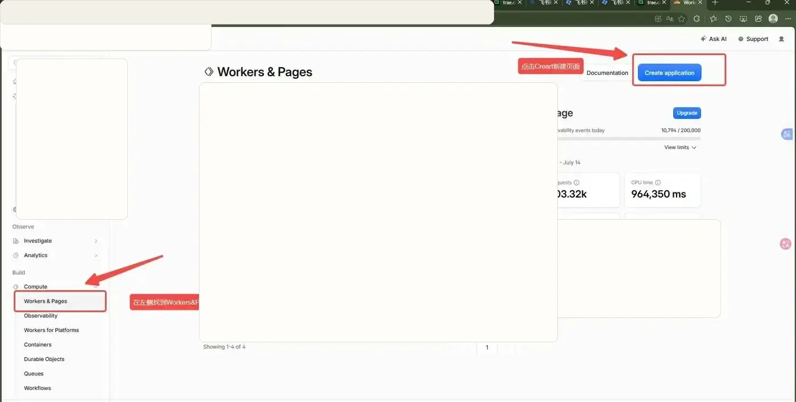
↑ 在左侧找到 Workers & Pages，然后点右上角蓝色按钮 Create application
创建新应用
点击右上角蓝色按钮 Create application。
中文理解：就是"创建新项目"的意思。
选择部署 Pages（不要选 Worker！）
默认显示 Create a Worker。不要点这个！我们是部署网站页面，需要选 Pages。
在页面下方找到 "Looking to deploy Pages? Get started"，点击 Get started。
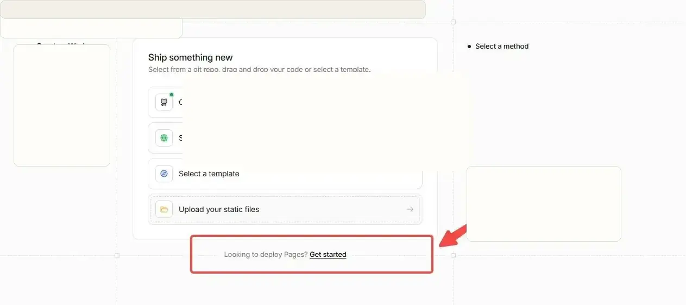
↑ 不要选 Create a Worker，在页面底部找到 "Looking to deploy Pages? Get started" 点这个
选择从 GitHub 导入
选择 Import an existing Git repository，点击 Get started。
中文理解：从 GitHub 上已有的代码仓库导入。这样以后你更新了 GitHub 上的代码，Cloudflare 会自动帮你重新部署。
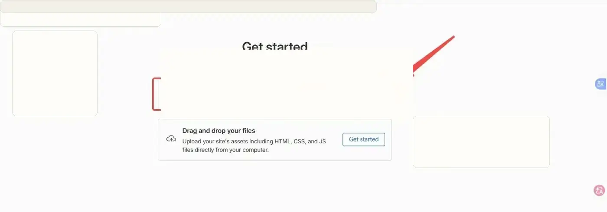
↑ 选第一个 "Import an existing Git repository"，然后点 Get started
选择 GitHub 仓库
确认 GitHub 账号是否正确 → 在 Select a repository 区域选择你的网站仓库。
仓库太多可以在搜索框输入名称搜索。
如果找不到仓库怎么办？
页面底部会提示 "configure repository access for the Cloudflare Pages app on GitHub"，点击 Cloudflare Pages 链接：
- 进入 GitHub 授权设置页面
- 选择允许 Cloudflare Pages 访问的仓库
- 勾选目标仓库 → 保存
- 回到 Cloudflare 页面刷新，重新搜索
填写配置信息（不知道怎么填就问 AI）
选择仓库后会进入配置页面，需要填写几个信息。这里有英文术语，你不需要自己判断怎么填。
AI 告诉你每个空填什么后，照着填就行。
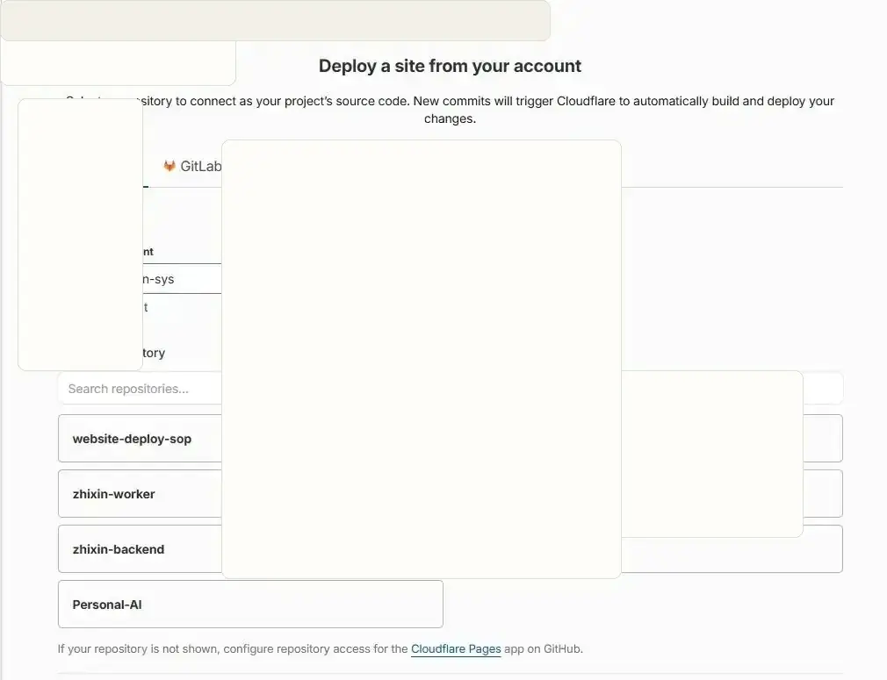
↑ 选择你的仓库后，剩下的配置不知道怎么填就把仓库地址发给 AI 让它告诉你
点击部署
配置完成后，点击页面底部的 Save and Deploy 按钮。
中文理解：保存并开始部署。Cloudflare 会开始自动构建你的网站。
等待部署完成
部署过程中会显示构建过程（一堆英文日志，看不懂没关系）。
如果部署成功，会出现成功页面，显示：
Success! Your project is deployed to Region: Earth
并展示一个网址，例如 website-deploy-sop.pages.dev。
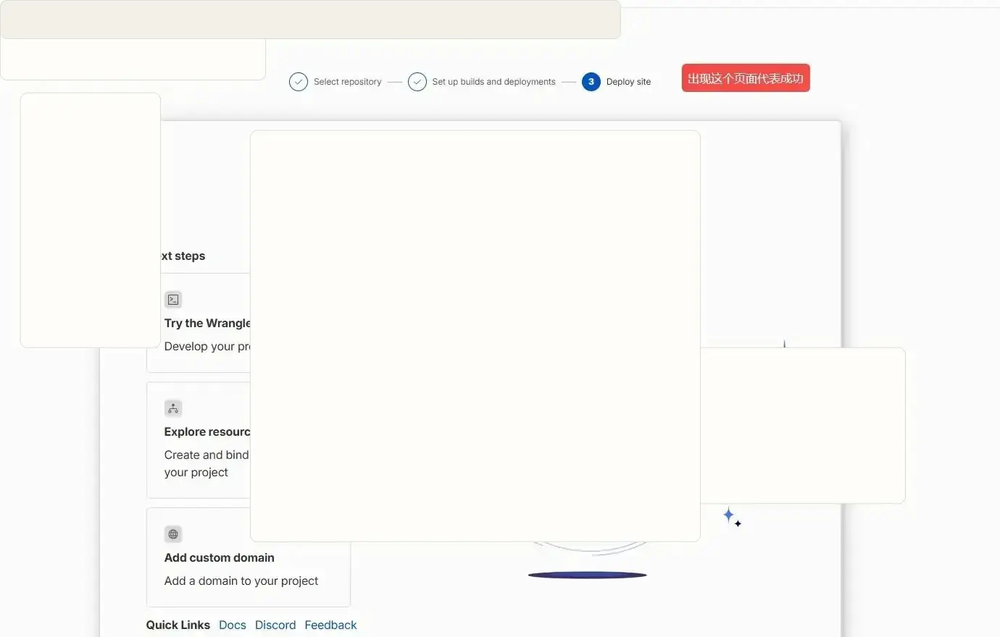
↑ 看到这个页面就代表部署成功了！出现这个地球图和网址就对了
找到正式网站地址
在项目详情页 Deployments → Production 区域，可以看到你的网站地址：
https://你的项目名.pages.dev
这个地址就是正式访问地址，可以分享给任何人。
xxx.pages.dev 是对外分享用的；还有一种带随机前缀的地址（比如 4601e4a2.xxx.pages.dev）是某次部署的预览链接，一般不用管。对外分享用正式地址。
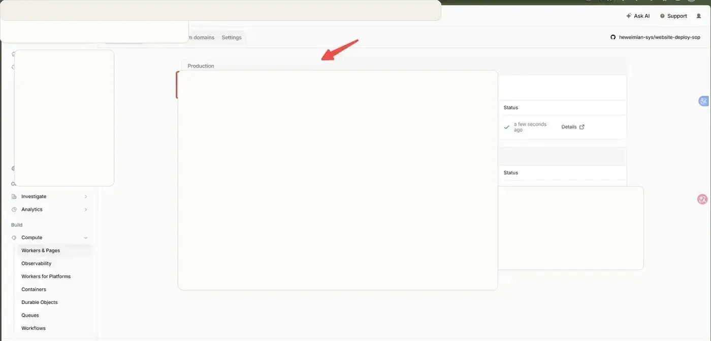
↑ 在 Deployments 页面找到 Production 区域，这里显示的就是你的正式网站地址
五、后端部署到 Cloudflare D1
你要完成的事：先创建一个 D1 Database，再回到当前 Pages 项目，在 Settings → Functions → Bindings 中添加 D1 database 绑定。
操作步骤
进入 Cloudflare 的 D1 Database
从 Cloudflare 控制台左侧进入 D1 数据库区域，准备创建后端要使用的数据库。
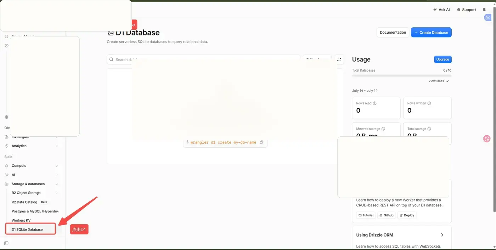
↑ 从 Cloudflare 控制台左侧进入 D1 数据库区域，准备创建后端要使用的数据库。
点击 Create database
在 D1 Database 页面点击创建按钮，开始新建数据库。
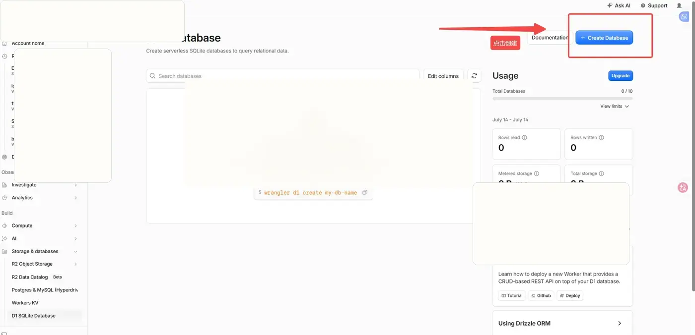
↑ 在 D1 Database 页面点击创建按钮，开始新建数据库。
回到 Workers & Pages 项目列表
找到当前网站对应的 Pages 项目，后续要把 D1 数据库绑定到这个项目。
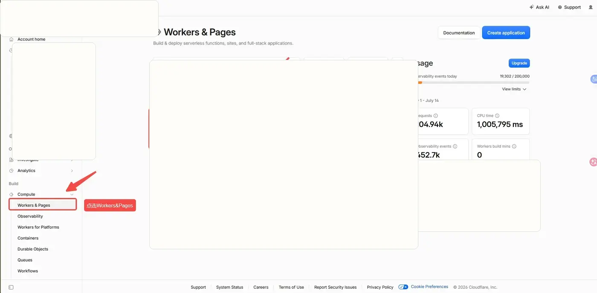
↑ 找到当前网站对应的 Pages 项目，后续要把 D1 数据库绑定到这个项目。
填写 D1 数据库名称
数据库名称使用项目名或业务名，位置保持 Automatic，让 Cloudflare 自动选择。
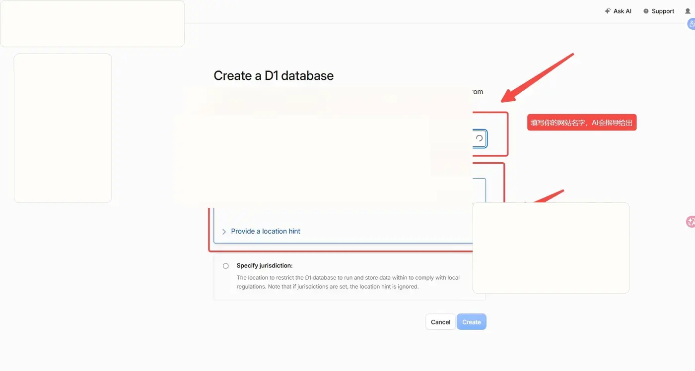
↑ 数据库名称使用项目名或业务名，位置保持 Automatic，让 Cloudflare 自动选择。
确认数据库创建成功
创建完成后，D1 Database 列表里会出现新的数据库记录。
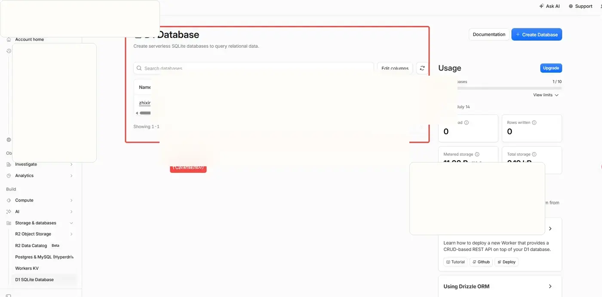
↑ 创建完成后，D1 Database 列表里会出现新的数据库记录。
进入 Pages 项目的 Settings
进入网站项目后切换到 Settings，并找到 Functions 相关配置。
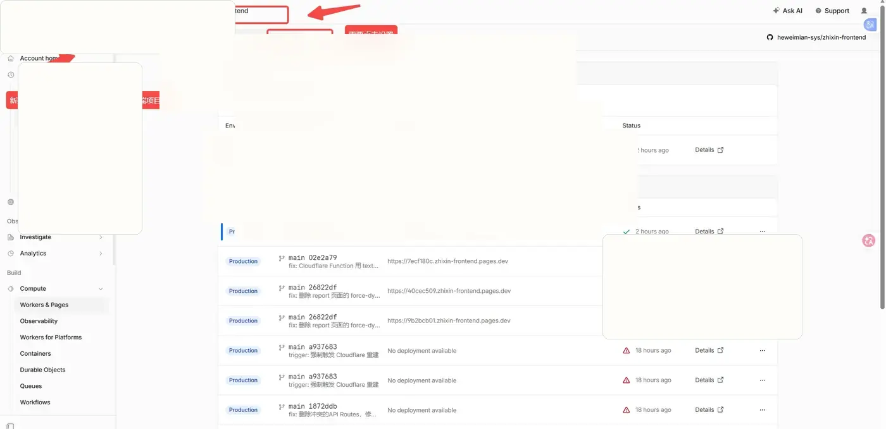
↑ 进入网站项目后切换到 Settings，并找到 Functions 相关配置。
打开 Bindings 并添加绑定
在 Bindings 区域点击 Add，准备把 D1 数据库暴露给后端函数使用。
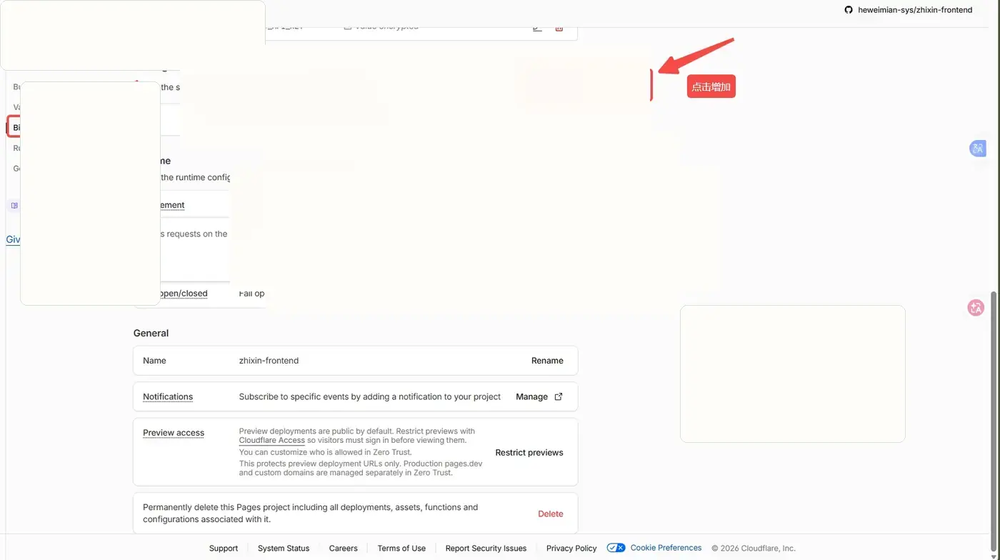
↑ 在 Bindings 区域点击 Add，准备把 D1 数据库暴露给后端函数使用。
选择 D1 database 类型
绑定类型选择 D1 database，不要选 KV、R2 或其他存储类型。
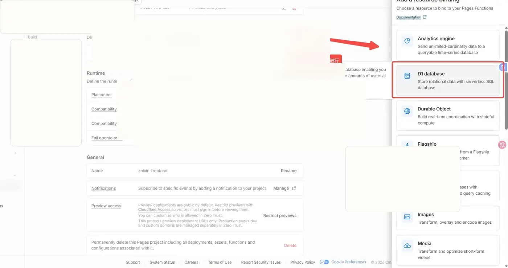
↑ 绑定类型选择 D1 database，不要选 KV、R2 或其他存储类型。
选择刚创建的数据库并保存
变量名填写后端代码约定的名称，数据库选择刚创建的 D1 Database，然后保存配置。
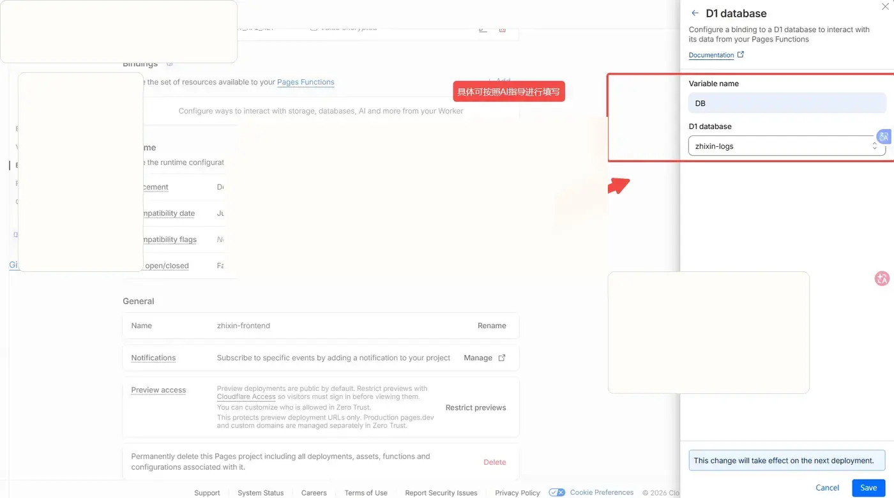
↑ 变量名填写后端代码约定的名称，数据库选择刚创建的 D1 Database，然后保存配置。
绑定完成后检查
| 检查项 | 正确结果 |
|---|---|
| D1 Database | Cloudflare 控制台里能看到刚创建的数据库 |
| Pages Binding | Pages 项目的 Functions / Bindings 里已添加 D1 database |
| 变量名 | Binding 变量名必须和后端函数代码里读取的名称一致 |
| 重新部署 | 保存配置后，重新部署或触发一次 Pages 构建 |
六、部署后检查事项
网站上线后，不要只看 Cloudflare 显示成功，还需要自己打开网站检查一遍。
检查清单
- 打开正式网站地址，确认页面能正常打开
- 检查首页内容是否显示正常（文字、图片有没有错位）
- 检查按钮、链接、图片是否能正常点击和显示
- 用手机打开网站地址试试（很重要！）
- 如果网站有搜索功能，试试搜索能不能用
- 如果网站有表单，试试能不能提交
七、遇到问题怎么办
问题 1：在 Cloudflare 找不到 GitHub 仓库
原因：Cloudflare 没有获得你 GitHub 仓库的访问权限。
解决：点击页面底部的 Cloudflare Pages 授权链接，到 GitHub 重新勾选目标仓库授权。
问题 2：部署失败了（显示红色）
原因：可能是配置填错了、代码有问题、或者依赖文件冲突。
解决：不要反复点击重新部署！把构建日志里的红色报错信息复制发给 AI：
问题 3：部署成功但页面是空白的
原因：通常是配置里的"输出目录"填错了。
解决：把你的 GitHub 仓库地址发给 AI，问 AI "输出目录应该填什么"，然后去 Cloudflare 修改配置重新部署。
问题 4：网站能打开但搜索/功能用不了
原因：可能是 Pages Functions 没正常运行，或者 D1 Binding 变量名和代码不一致。
解决：
- 去 Cloudflare Pages 项目里检查 Settings → Functions → Bindings
- 确认 D1 database 已绑定，并且变量名和后端代码一致
- 保存配置后重新部署，再把浏览器报错和 Functions 日志发给 AI
问题 5：Cloudflare 显示 522 错误
原因：可能是网站还在构建中，或者构建失败了。
解决：去 Cloudflare 控制台 Deployments 页面看看构建状态。如果显示红色（失败），按问题 2 的方法处理。
问题 6：提示有安全漏洞
原因：你的项目用到了某个有安全问题的依赖包。
解决：把提示信息发给 AI，让 AI 帮你升级到安全版本并重新推送。
问题 7：Vercel 在国内打不开
原因：Vercel 在国内被墙了。
解决：改用 Cloudflare Pages 部署。这就是本 SOP 推荐用 Cloudflare 的原因。
八、给 AI 的提问模板
整个部署过程中，遇到任何不确定的地方，都可以用以下模板问 AI。记住一个原则：信息越详细，AI 回答越准。
九、后续维护
更新网站内容
如果你修改了网站代码（或让 AI 帮你改了），只需要把新代码推送到 GitHub，Cloudflare 就会自动重新部署。不需要手动操作。
查看网站状态
- Cloudflare：控制台 → Workers & Pages → 点你的项目 → Deployments 看每次部署是否成功（绿色=成功，红色=失败）
- Cloudflare Functions：Pages 项目 → Functions / Deployments 查看函数日志和构建状态
查看网站访问数据
Cloudflare 自带免费的数据统计功能：
- 控制台 → 点你的项目 → Analytics 标签
- 可以看到：访问次数、访客数量、流量来源、访问者国家分布等
网站监控（可选）
推荐用 UptimeRobot（https://uptimerobot.com）免费监控网站是否在线：
- 每 5 分钟自动检查一次你的网站能不能打开
- 网站打不开了立刻发邮件通知你
- 免费版支持 50 个网站监控
回退到旧版本
如果新版本有问题，可以回退到之前能用的版本：
- Cloudflare：Deployments 页面 → 找到之前显示绿色的那次构建 → 点 Promote to production
十、流程总结
第一步：前端部署（必须）
- 登录 Cloudflare → 找到 Workers & Pages → 点 Create application
- 选 Pages → Get started → 选 Import an existing Git repository
- 连接 GitHub → 选择你的网站仓库
- 填写配置信息（不知道怎么填就问 AI）
- 点 Save and Deploy → 等待构建完成
- 复制
xxx.pages.dev网站地址
第二步：后端部署（有搜索/登录等功能时需要）
- 进入 Cloudflare D1 Database，创建数据库
- 回到 Pages 项目 → Settings → Functions → Bindings
- 添加 D1 database 绑定，变量名和代码保持一致
- 保存配置后重新部署 Pages 项目
三个重要地址（记好）
| 名称 | 地址格式 | 用来干什么 |
|---|---|---|
| 网站地址 | https://xxx.pages.dev | 分享给用户访问 |
| D1 绑定名 | DB 或你的代码约定名称 | 告诉 AI，用来核对 Functions 代码 |
| 检查地址 | https://xxx.pages.dev/api/health | 验证网站功能是否正常 |
记住这些原则
- 网站部署选 Pages，不要选 Worker
- 找不到 GitHub 仓库，去检查授权
- 不知道配置怎么填，不要瞎填，问 AI
- 部署成功不等于网站没问题，要自己打开检查
- 对外分享用
xxx.pages.dev正式地址 - 遇到失败，先复制报错信息问 AI，不要反复点击部署
- 如果 AI 也卡住了，换个 AI 工具试试，或者搜索报错信息
- 你不是一个人在战斗：技术的事交给 AI，你负责点击和判断